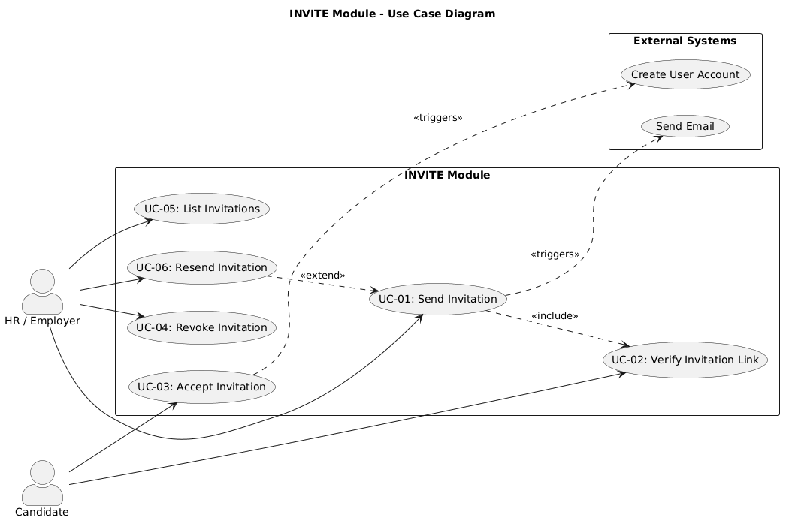

| Version | 1.0 |
| System | Invitation Management System |
| Module | INVITE - Invitation Management |
| Database | invite_db |
| Date | 2026-08-17 |
| Author | Hương Trà |
| Status | Draft |
This document defines the software requirements for the Invitation Management module of the system.
The Invitation Management module handles:
| Module | Dependency Type | Description |
|---|---|---|
| AUTH | Sync (API Call) | Read user data, create/activate account on invitation acceptance |
| Async (RabbitMQ) | Send invitation email notifications | |
| RECR/Organization | Sync (API Call) | Employer context and organization validation |
| Term | Definition |
|---|---|
| FR | Functional Requirement |
| NFR | Non-Functional Requirement |
| UC | Use Case |
| SHA-256 | Secure Hash Algorithm 256-bit |
| RabbitMQ | Message broker for async communication |
| Token Hash | SHA-256 hash of the raw invitation token |
| Aspect | Value |
|---|---|
| Module Code | INVITE |
| Module Name | Invitation Management |
| Description | Send, verify, accept, revoke, and manage organization invitations via email |
| Database | invite_db |
| Tables | invitations |
| Tech Stack | NestJS, Drizzle ORM, PostgreSQL, RabbitMQ |
| Req ID | Module | Requirement | Use Case | Priority | Description |
|---|---|---|---|---|---|
| FR-001 | INVITE | Send Invitation | UC-01 | High | HR/Employer shall be able to send an invitation to a candidate or other HR via email with an assigned organization role |
| FR-002 | INVITE | Generate Token | UC-01 | High | System shall generate a secure random token, store its SHA-256 hash, and include the raw token in the invitation URL |
| FR-003 | INVITE | Send Email Event | UC-01 | High | System shall emit a RabbitMQ event to the EMAIL module for sending the invitation email |
| FR-004 | INVITE | Verify Token | UC-02 | High | System shall validate the invitation token on click, checking expiry and status before returning invitation details |
| FR-005 | INVITE | Accept Invitation | UC-03 | High | System shall update invitation status to ACCEPTED and emit event for AUTH module to activate/create account |
| FR-006 | INVITE | Revoke Invitation | UC-04 | Medium | HR/Employer shall be able to cancel a pending invitation |
| FR-007 | INVITE | List Invitations | UC-01 | Medium | System shall allow viewing all invitations sent by a user or organization with filtering and pagination |
| FR-008 | INVITE | Resend Invitation | UC-01 | Medium | System shall generate a new token for expired or revoked invitations and resend the email |

| Aspect | Description |
|---|---|
| Actor | HR or Employer (authenticated user with HR/Employer role) |
| Preconditions | User is logged in with HR or Employer role; target email is valid |
| Main Flow | 1. HR/Employer navigates to invitation page 2. HR/Employer enters recipient email, selects role (HR, Candidate, Employer), and optional employer_id 3. System validates input (email format, role validity, no duplicate pending invitation) 4. System generates secure random token 5. System computes SHA-256 hash of token and stores hash in database 6. System creates invitation record with status PENDING and 7-day expiry 7. System emits invitation.created event to RabbitMQ 8. EMAIL module sends invitation email with raw token in URL 9. System returns success response with invitation details |
| Alternative Flows | 3a. Email already has pending invitation for same employer → System returns 409 Conflict 3b. Invalid email format → System returns 400 Validation Error 3c. Invalid role → System returns 400 Validation Error 3d. User trying to invite themselves → System returns 400 Error |
| Postconditions | Invitation created with PENDING status; email event published; raw token sent to recipient |
| Related FR | FR-001, FR-002, FR-003 |

| Aspect | Description |
|---|---|
| Actor | Candidate (unauthenticated user clicking email link) |
| Preconditions | User received invitation email; invitation is in PENDING status |
| Main Flow | 1. Candidate clicks invitation link in email 2. Frontend extracts raw token from URL 3. Frontend calls GET /invitations/verify?token={raw_token} 4. System computes SHA-256 hash of provided token 5. System looks up invitation by token_hash 6. System validates invitation status is PENDING and not expired 7. System returns invitation details (invitation_id, email, role, employer_id, expired_at) |
| Alternative Flows | 5a. Token hash not found → System returns 404 INVITE_NOT_FOUND 6a. Invitation expired → System returns 410 INVITE_EXPIRED 6b. Invitation already accepted → System returns 400 INVITE_ALREADY_USED 6c. Invitation revoked → System returns 400 INVITE_REVOKED |
| Postconditions | Invitation details returned for display; candidate can proceed to accept |
| Related FR | FR-004 |

| Aspect | Description |
|---|---|
| Actor | Candidate (authenticated user) |
| Preconditions | User is logged in; invitation is PENDING and not expired; email matches |
| Main Flow | 1. Candidate fills in registration form (full_name, optional password) 2. Candidate submits acceptance 3. System validates user is logged in and email matches invitation 4. System validates invitation status is PENDING 5. System updates invitation status to ACCEPTED and sets accepted_at timestamp 6. System emits invitation.accepted event to RabbitMQ 7. AUTH module creates/activates user account 8. System returns success response with invitation_id and status |
| Alternative Flows | 3a. Email does not match logged-in user → System returns 400 Error 4a. Invitation expired → System returns 400 INVITE_EXPIRED 4b. Invitation already used → System returns 400 INVITE_ALREADY_USED 4c. Invitation revoked → System returns 400 INVITE_REVOKED |
| Postconditions | Invitation status updated to ACCEPTED; user account created/activated in AUTH module |
| Related FR | FR-005 |

| Aspect | Description |
|---|---|
| Actor | HR/Employer (inviter or admin) |
| Preconditions | User is logged in; invitation exists with PENDING status; user is inviter or admin |
| Main Flow | 1. HR/Employer navigates to invitation list 2. HR/Employer selects pending invitation to revoke 3. System validates invitation is PENDING 4. System validates user is inviter or admin 5. System updates invitation status to REVOKED 6. System returns success response |
| Alternative Flows | 3a. Invitation not PENDING → System returns 400 Error 4a. User not authorized → System returns 403 Forbidden |
| Postconditions | Invitation status updated to REVOKED; invitation link no longer valid |
| Related FR | FR-006 |
| Req ID | Category | Requirement | Target |
|---|---|---|---|
| NFR-001 | Security | Token expiry | 7 days (configurable via environment variable) |
| NFR-002 | Performance | Email delivery | Email sent within 5 seconds of invitation creation |
| NFR-003 | Security | Rate limiting | 10 invitations per hour per user |
| NFR-004 | Security | Token storage | SHA-256 hash only; raw token never stored in database |
| NFR-005 | Security | Ownership validation | Only inviter or admin can revoke/resend invitations |
| NFR-006 | Availability | Service uptime | 99.9% |
| NFR-007 | Performance | API response time | < 500ms (p95) |
| Rule ID | Rule | Related FR |
|---|---|---|
| BR-INVITE-01 | Users cannot invite themselves (email must differ from logged-in user) | FR-001 |
| BR-INVITE-02 | Invitation email must be a valid email format | FR-001 |
| BR-INVITE-03 | Role must be a valid organization role (HR, Candidate, Employer) | FR-001 |
| BR-INVITE-04 | On accept, the logged-in user's email must match the invitation email | FR-005 |
| BR-INVITE-05 | Only invitations with PENDING status can be accepted | FR-005 |
| BR-INVITE-06 | Only PENDING invitations can be revoked | FR-006 |
| BR-INVITE-07 | Only EXPIRED or REVOKED invitations can be resent | FR-008 |
| BR-INVITE-08 | Duplicate pending invitations for same email+employer are not allowed | FR-001 |
| BR-INVITE-09 | Invitation token expires after 7 days by default | FR-002, NFR-001 |
| Req ID | Requirement | DB Table | API Endpoint |
|---|---|---|---|
| FR-001 | Send Invitation | invitations | POST /invitations/send |
| FR-002 | Generate Token | invitations (token_hash) | POST /invitations/send |
| FR-003 | Send Email Event | - | POST /invitations/send (RabbitMQ event) |
| FR-004 | Verify Token | invitations | GET /invitations/verify |
| FR-005 | Accept Invitation | invitations | POST /invitations/accept |
| FR-006 | Revoke Invitation | invitations | DELETE /invitations/:id |
| FR-007 | List Invitations | invitations | GET /invitations |
| FR-008 | Resend Invitation | invitations | POST /invitations/:id/resend |